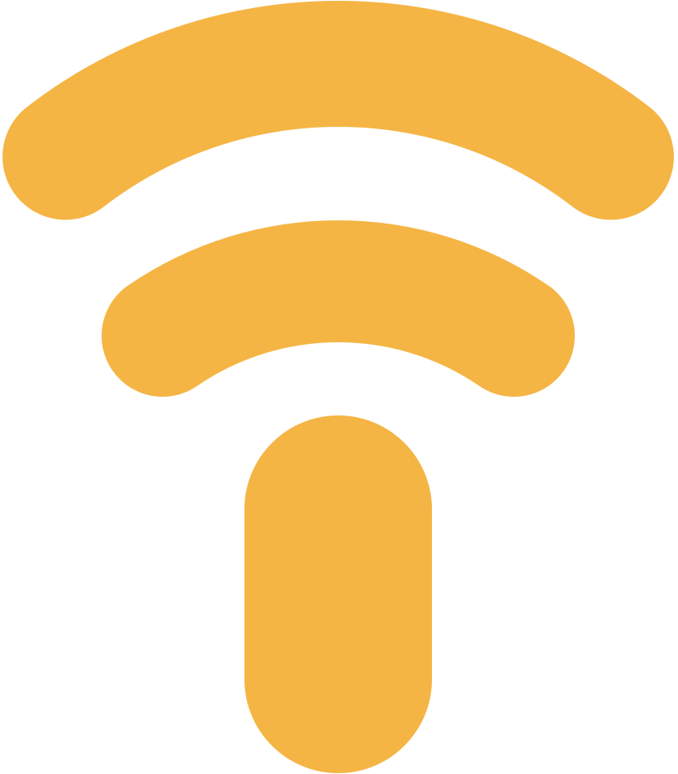

Start a project from your browser
If a project isn't running, Beacon can start it when you open its address. You'll see its output as it comes up, so you can tell what's happening.

beaconBeacon gives your local projects .test domains and routes requests to the right local port. Each project keeps its port, so you only set up your dev server once. When you want someone else to try it, you can share it on a public link through your own relay.
macOS 15 or laterBeacon takes care of the addresses, ports and certificates around your projects, whether you're working in a browser, a terminal or a Docker container.
If a project isn't running, Beacon can start it when you open its address. You'll see its output as it comes up, so you can tell what's happening.
Beacon's sidecar lets containers reach your local projects using the same addresses and trusted certificates you use on your Mac.
Open shop.test or admin.shop.test without remembering a port or registering each subdomain. You can add .dev or your own suffix in Settings too.
A project gets the same port every time, so you can put it in .env or vite.config.js and commit it. Beacon won't give it to anything else, even when the project isn't running.
Beacon makes its own certificate authority. Trust it once and every project and subdomain gets a working https:// address.
The menu bar shows your projects and their status. You can open one, start one that's down or share it without leaving whatever you're working on.
Everything in the app is in the beacon command too. Use beacon port in a startup script, or add --json when another tool needs to read the result.
New versions install from inside the app, and if the background service needs updating too it asks for your password once.
> Get the shop project running
⏺ beacon register --json
⎿ shop.test on port 3103
⏺ Set the port in vite.config.js and set APP_URL to https://shop.test
⏺ npm run dev
It's running at https://shop.test.
Beacon can add a short note to Claude Code and Codex explaining how it works. After that, when you ask your agent to get a project running, it registers the project, starts the dev server on the right port and gives you the .test link, so you don't have to think about ports at all.
https://shop.test for things like APP_URL, OAuth callbacks and webhooks instead of a localhost address.Register a project from its folder and Beacon gives it an address and a port. After that, the menu bar is there whenever you need to open it or check how it's doing.
Run beacon register in the project folder, then use the port it gives you for your dev server. Running it again returns the same port, so it's safe to put in a setup script.
❯ beacon register
studio● running
Open, start or share a project from the menu. Settings holds your domain suffixes, port range and relay details, though you won't need to change them often.
test3100to3999Existing projects keep their ports.
relay.example.comShare a project from its menu to give it a public URL.
Tells your agent to ask Beacon for a port and give you .test links.
Just a preview. Nothing on your Mac changes.
If the service needs updating too, it asks for your password once.
Sharing goes through a relay you host, which runs in a small Docker container behind whatever handles HTTPS on your server. We use Traefik, so that's what the steps below show. All it needs is a Compose file and an .env file, so you can set it up from a hosting control panel without shell access.
Add two A records that point to your server, one for the relay itself and a wildcard for the projects you share.
relay.example.comDNS only*.relay.example.comDNS onlyThe relay needs a certificate that covers itself and all of its project subdomains. Any reverse proxy can handle that. We give Traefik a Cloudflare DNS-challenge resolver, because Let's Encrypt only issues wildcards through a DNS challenge.
relay.example.com*.relay.example.comreadTimeout: 0readTimeout to 0, or it drops the tunnel every minute.Use the supplied Compose file with a .env like the example below, replacing the values with your own. You can deploy it from your hosting control panel.
IMAGE_TAG=main
BEACON_DOMAIN=relay.example.com
BEACON_TOKENS=sam:3f9c…
BEACON_ADMINS=sam
TRAEFIK_NETWORK=traefik
TRAEFIK_ENTRYPOINT=websecure
TRAEFIK_CERTRESOLVER=cloudflareAdding your label to BEACON_ADMINS makes you an admin, so you can create invitations in Settings → Relay access. Each person opens their .beacon file and presses Apply to connect.
relay.example.comBeacon is free to download, and the source is on GitHub.
Download BeaconmacOS 15 or later